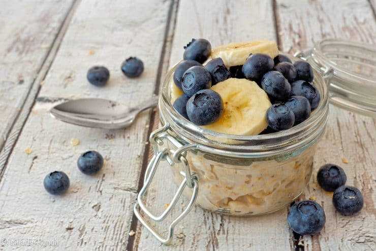

Overnight Oats Recipe

Description
Overnight Oats! there are plenty of ways to make them but this recipe is specifically going to be making Banna Berry Overnight Oats!
Ingredients
- 1/2 ripe banana
- 1/4 cup greek yogurt
- 1/2 cup almond milk
- 1/2 cup old-fashioned oats
- sprinkle of salt
- 1 teaspoon chia seeds
Ingredients to add next day
- 1 cup fresh or frozen fruit (raspberries, blackberries, strawberries, blueberries, cherries)
- 2 tablespoons walnuts
Directions
- Mash up banana with fork or masher. Add Greek yogurt and almond milk and mix well. Stir in oats, salt, and chia seeds.
- Refrigerate overnight.
- In the morning, top with a mix of fresh and frozen, defrosted berries (and their juice). if you have nuts add them too!